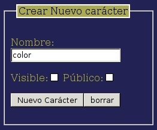
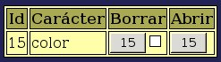
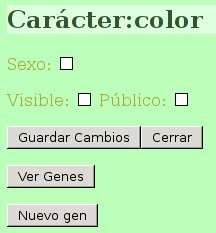
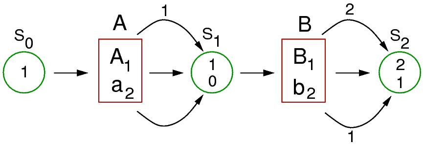
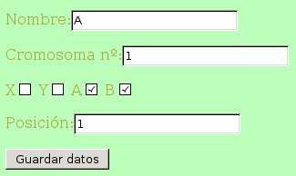
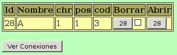
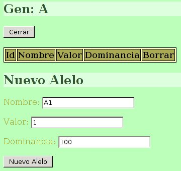
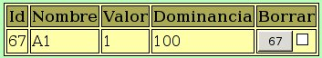
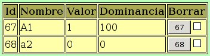
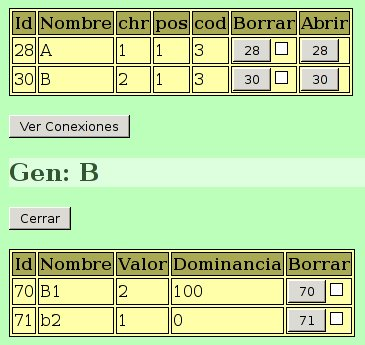

Para crear nuestro primer carácter pulsamos sobre el botón “Caracteres” y se muestra una tabla con los caracteres que se haya definido, que debería estar vacía, y un formulario para crear un nuevo carácter:
Para poder practicar con los diferentes aspectos del interfaz se creará un carácter con cierta complejidad, en el que intervengan dos genes que muestren una interacción génica epistática recesiva.
En primer lugar introducimos el nombre del carácter en el campo correspondiente. Llamaremos al carácter “color”. La marca público hará que otros usuarios puedan acceder y utilizar este carácter para sus propios proyectos, y la marca visible hará que tengan acceso al diseño del carácter. Dejaremos ambas opciones sin marcar.

Una vez pulsado el botón “Nuevo Caracter” los datos aparecerán en la tabla de caracteres:

La columna Id muestra un número de identificación del carácter que se ha generado de forma automática. En las siguientes columnas se muestra el nombre del carácter, y botones para borrarlo o accceder a su diseño (Abrir). Estos botones muestran la Id del carácter. Para evitar un borrado accidental, el botón de borrar no surtirá efecto a menos que cuando se pulse se encuentre marcada la casilla junto a él.
Si pulsamos el botón “Abrir”, se nos muestran a la derecha algunos datos referentes al carácter recién creado:

La opción Sexo se marca si el carácter que se define determinará el sexo del individuo. La dejaremos sin marcar porque no es este el caso que nos ocupa. Las opciones Visible y Público asociadas al carácter se muestran a continuación y pueden cambiarse en cualquier momento sin más que alterar las marcas correspondientes y pulsar sobre el botón “Guardar cambios”. El botón “Cerrar” cierra de nuevo el carácter, y los otros dos botones sirven para acceder a los genes que intervienen en el carácter. Si pulsamos el botón “Ver Genes”, aparece una tabla vacía, puesto que aún no hemos definido ningun gen para este carácter. El botón también cambiará mostrando la leyenda “Ocultar Genes”.
Obviamente para crear un nuevo gen deberíamos pulsar el botón “Nuevo gen”, pero antes haremos algunas consideraciones sobre la forma en que pensamos diseñar este carácter.
Se produce una interacción génica epistática simple recesiva cuando dos genes codifican dos enzimas que actúan en dos pasos de una misma ruta metabólica, y se cuplen las condiciones representadas en el siguiente esquema:

Supongamos dos genes A y B que actúan consecutivamente en la mima ruta metabólica de síntesis de un pigmento que colorea las flores de una planta. Existen dos alelos del gen A, A1 y a2. El alelos a2 produce una enzima mutante no funcional. El sustrato de esa enzima está representado en el esquema como S0. El número 1 dentro del círculo verde que representa S0 corresponde a un valor arbitrario que se le asigna a ese sustrato, por ejemplo, podría representar una concentración, un número de moléculas, o una variedad concreta entre varios posibles sustratos. Un valor de 0 indicaría la ausencia del sustrato y por tanto haría que no se diera esa ruta metabólica. Por eso en el esquema se le ha asignado el valor 1, de manera que existe el sustrato S0 y la enzima fabricada por el gen A podría actuar sobre él. Los alelos de A, representados dentro del cuadro rojo, actuarían sobre ese sustrato para convertirlo en S1. La enzima codificada por A1 actuaría sobre S0 dando como producto de la reacción S1. Esta acción se representa dándole a S1 un valor distinto de 0, por ejemplo 1, como se representa en el esquema. Puesto que la enzima codificada por a2 no es funcional, no podría actuar sobre S1 y por eso el resultado sería la asignación de un valor 0 a S1, indicando así la ausencia de producto. Los individuos que resulten homocigóticos para a2 tendrán un valor 0 en S1, por lo que la ruta metabólica se interrumpirá en este punto, y no se frabricará ningún pigmento. La presencia del alelo A1, aunque sea en heterocigosis, resultará en la asignación de un valor S1 = 1. Por lo tanto, A1 se comporta como dominante y a2 como recesivo.
El producto S1 es a la vez sustrato de la enzima codificada por el gen B. En este caso supongamos una dominancia completa de B1 sobre b2 en donde ambos alelos codifican una enzima funcional, pero que producen diferentes pigmentos. Podemos identificar los distintos pigmentos asignándole valores diferentes al producto S2. Así, la enzima codificada por B1 le asignaría un valor S2 = 2 que podría corresponder, por ejemplo, a un color verde, y la enzima codificada por b2 le asignaría un valor S2 = 1, que podría corresponder a un color rojo.
Teniendo en cuenta las propiedades del diseño de éste caŕacter, una planta homocigótica a2a2 tendría las flores blancas, ya que la síntesis del pigmento se habría interrumpido en S1 y, por lo tanto sería irrelevante qué alelos tuviese en el gen B. De esta forma el alelo recesivo a2 ejerce una interacción epistática sobre el gen B, es decir, una epistasis simple recesiva. Si una planta posee el alelo A1, la síntesis del pigmento final dependerá entonces del gen B, pudiendo producir flores verdes o rojas dependiendo de la composición alélica de B.
Una vez decidido como será el diseño del carácter veremos la forma de implementarlo a través de GenWeb.
Puesto que ya sabemos como vamos a diseñar el carácter, pulsamos el botón “Nuevo gen”. Aparecerá un formulario que nos permite asignarle un nombre, indicar el número del cromosoma donde queremos que se localize, así como su posición dentro de este cromosoma. Para el caso que nos ocupa la posicón dentro del cromosoma es irrelevante, aunque sí tendremos que asegurarnos de situar cada gen en un cromosoma distinto de forma que tengan segregación independiente. Las marcas en X e Y se utilizan para indicar en qué cromosoma sexual se encontraría el gen, en caso en que fuese ligado al sexo, holándrico o pseudoautosómico. A y B se utilizan para indicar en qué cromosoma de una pareja autosómica se encuentra. Por defecto se encuentran marcados los dos cromosomas de una pareja autosómica. Marcar solo uno de ellos permitiría por ejemplo simular la presencia de una deleción que hubiese ocasionado la pérdida de uno de los alelos.
Para nuestro diseño rellenaremos el formulario con los datos que se muestran en la figura a continuación:

Cuando pulsamos el botón “Guardar Datos” el formulario desaparece. Para poder ver el nuevo gen que hemos creado pulsamos el botón “Ver Genes”. Aparecerá una tabla en la que podremos ver los datos que hemos introducido:

Ahora deberemos asignar alelos a este gen. Para ello debemos abrirlo pulsando sobre el botón de la columna “Abrir” que muestra la Id del nuevo gen. Al abrirlo nos aparecerá una tabla de alelos vacía, y un formulario para introducir los datos de un nuevo alelo, que rellenaremos como se muestra en la figura:

El valor del alelo es el que éste alelo en particular asignaría al producto de la reacción en la ruta metabólica, o sumaría al valor de su sustrato en caso de tratarse de un gen con efecto acumulativo. La dominancia se expresa en%. Un valor de 100 indicaría una dominancia completa, auque la relación con otros alelos dependerá también de los valores de dominancia de los demás alelos. Este valor puede ser superior al 100%, lo que ocasionaría casos de sobredominancia, en los que los heterocigotos pueden tener valores fenotípicos superiores a los homócigotos para este alelo.
Tras pulsar el botón “Nuevo Alelo”, los datos aparecerán en la tabla de alelos de este gen.

Creamos ahora un nuevo alelo de nombre a2, con un valor de 0 de acuerdo con nuestro diseño, que resultará en una variante no funcional de la enzima. Respecto al valor de dominancia, para que este alelo fuese completamente recesivo respecto a A1 debería tener una dominancia 0.
Una vez creado este nuevo alelo, la tabla de alelos del gen A quedaría así:

Pulsamos ahora sobre el botón “Cerrar” que hay sobre la tabla de alelos para cerrar el gen A.
Ahora pasaremos a crear el gen B repitiendo los mimos pasos. Los datos a consignar para el Gen B y sus dos alelos son los siguientes:

Los valores que se observan en las tablas son los que deben introducirse en los respectivos formularios.
Una vez que todo está correcto, podemos cerrar el gen B.